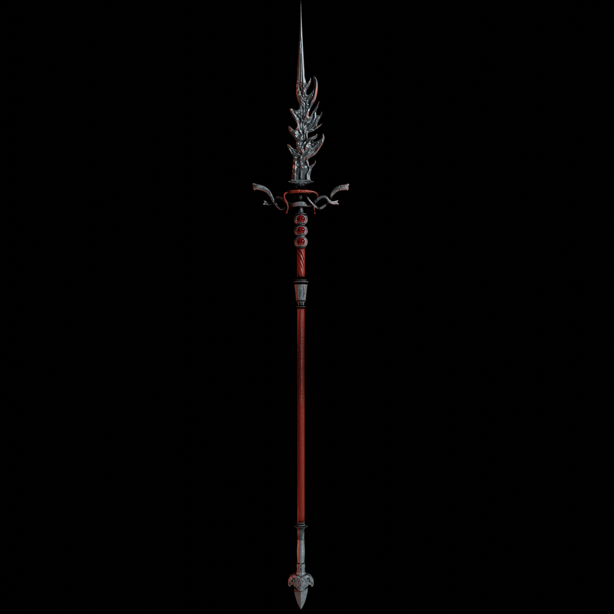

Lança do Espetador é uma Grande Lança em Elden Ring. Foi adicionada com o DLC Sombra da Árvore Erdtree. A Lança do Espetador escala principalmente com Força, Destreza e Fé e é a lança lendária empunhada por Messmer, o Espetador. Isso vem com a habilidade Assalto de Messmer que permite que você faça um combo de ataques e, eventualmente, bata a lança que causa uma área ampla de dano.
